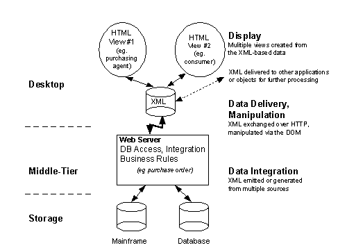
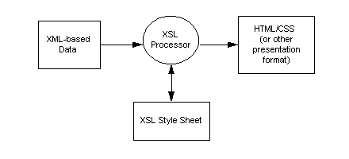

|
| ||
|
| ||
Microsoft Corporation
April 3, 1998
 Download this document in Microsoft Word (.DOC) format (zipped, 26.3K).
Download this document in Microsoft Word (.DOC) format (zipped, 26.3K).
Contents
Abstract
Introduction
What is XML?
Benefiting from XML
More Meaningful Searches
Development of Flexible Web Applications
Delivery of Data on the Web
Open Standards
Supported by Microsoft Products
Opportunities
XML Architecture: Building Flexible Three-Tier Web Applications
Three-Tiered Architecture
Data Integration
Data Delivery, Manipulation
Displaying XML-Based Data in HTML
XML Vocabularies
XML Tool Support
Summary
For More Information
Extensible Markup Language (XML) provides a significant advance in how data is described and exchanged by Web-based applications using a simple, flexible standards-based format. Hypertext markup language (HTML) enables universal methods for viewing data; XML provides universal methods for working directly with data.
Internet protocol (IP), the Hypertext Markup Language (HTML) and the Hypertext Transport Protocol (HTTP) have revolutionized the manner in which information is distributed, displayed and searched for. Organizations rapidly embraced browsers and search engines with the creation of corporate intranets, then extended these to customers, suppliers, and business partners with extranets.
Extensible Markup Language (XML), which complements HTML, promises to increase the benefits that can be derived from the wealth of information found today on IP networks around the world. This is because XML provides a uniform method for describing and exchanging structured data. The ability to describe structured data in an open text-based format and deliver this data using standard HTTP protocol is significant for two reasons. XML will facilitate more precise declarations of content and more meaningful search results across multiple platforms. And once the data is located it will enable a new generation of viewing and manipulating the data.
HTML can be used to tag a word to be displayed in bold or italic; XML provides a framework for tagging structured data. An XML element can declare its associated data to be a retail price, a sales tax, a book title, the amount of precipitation, or any other desired data element. As XML tags are adopted throughout an organization's intranet, and by others across the Internet, there will be a corresponding ability to search for and manipulate data regardless of the applications within which it is found. Once data has been located, it can be delivered over the wire and presented in a browser such as Microsoft® Internet Explorer 4.0 in any number of ways, or it can be handed off to other applications for further processing and viewing.
XML is a subset of Standard Generalized Markup Language (SGML) that is optimized for delivery over the Web; it is defined by the World Wide Web Consortium (W3C), ensuring that structured data will be uniform and independent of applications or vendors. This resulting interoperability kick-starts a new generation of business and electronic-commerce Web applications.
Microsoft Corp. is working with the W3C and other organizations to create a powerful standard definition of XML to significantly advance how people can take advantage of Web-based data. HTML enables a universal method for displaying data; XML provides a universal method for describing data. There is a rapidly growing need to go beyond simply viewing data, as is the case with Web browsers today. People need to be able to work with and manipulate the data. And this is what XML allows.
Microsoft has implemented support for the XML standard within Internet Explorer 4.0 and will use XML in its next release of Microsoft Office and other products. This commitment to XML is important because corporations are increasingly moving from classic client/server two-tier application models to three-tier models, in which a browser front end interacts with a middle-tier Web server, which in turn communicates with a back-end database server for storage. This three-tier architecture has several benefits over client/server models, including easier scalability and better security. And XML will make possible richer implementation of such models through structured data exchanged over HTTP.
The power and beauty of XML is that it maintains the separation of the user interface from structured data, allowing the seamless integration of data from diverse sources. Customer information, purchase orders, research results, bill payments, medical records, catalog data and other information can be converted to XML on the middle tier, allowing data to be exchanged online as easily as HTML pages display data today. Data encoded in XML can then be delivered over the Web to the desktop. No retrofitting is necessary for legacy information stored in mainframe databases or documents, and because HTTP is used to deliver XML over the wire, no changes are required for this function.
Once the data is on the client desktop, it can be manipulated, edited, and presented in multiple views, without return trips to the server. Servers now become more scalable, due to lower computational and bandwidth loads. Also, since data is exchanged in the XML format, it can be easily merged from different sources.
XML is valuable to the Internet as well as large corporate intranet environments because it provides interoperability using a flexible, open, standards-based format, with new ways of accessing legacy databases and delivering data to Web clients. Applications can be built more quickly, are easier to maintain, and can easily provide multiple views on the structured data.
Extensible Markup Language is a text-based format that lets developers describe, deliver and exchange structured data between a range of applications to clients for local display and manipulation. XML also facilitates the transfer of structured data between servers themselves. Vast stores of legacy information exist today, distributed across disparate, incompatible databases. XML allows the identification, exchange and processing of this data in a manner that is mutually understood, using custom formats for particular applications if needed.
XML resembles and complements HTML. XML describes data, such as city name, temperature and barometric pressure, and HTML defines tags that describe how the data should be displayed, such as with a bulleted list or a table. XML, however, allows developers to define an unlimited set of tags, bringing great flexibility to authors, who can decide which data to use and determine its appropriate standard or custom tags.
In this case, XML is used to describe a weather report:
<weather-report>
<date>March 25, 1998</date>
<time>08:00</time>
<area>
<city>Seattle</city>
<state>WA</state>
<region>West Coast</region>
<country>USA</country>
</area>
<measurements>
<skies>partly cloudy</skies>
<temperature>46</temperature>
<wind>
<direction>SW</direction>
<windspeed>6</windspeed>
</wind>
<h-index>51</h-index>
<humidity>87</humidity>
<visibility>10</visibility>
<uv-index>1</uv-index>
</measurements>
</weather-report>
Figure 1. Weather report encoded in XML
This data could be displayed in many different ways, or it could be handed off to other applications for further processing. In the future, style sheets could help by transforming structured data into different HTML views for display in a browser, or even to other display formats on other platforms running other applications.
Today with XML, Document Type Definitions (DTDs) may accompany a document, essentially defining the rules of the document, such as which elements are present and the structural relationship between the elements. DTDs help to validate the data when the receiving application does not have a built-in description of the incoming data. With XML, however, DTDs are optional.
Data sent along with a DTD is known as "valid" XML. In this case, an XML parser could check incoming data against the rules defined in the DTD to make sure data was structured correctly. Data sent without a DTD is known as "well-formed" XML. Here an XML-based document instance, such as the hierarchically structured weather data above, can be used to implicitly describe itself.
With both valid and well-formed XML, XML encoded data is self-describing. The open and flexible format used by XML allows it to be employed anywhere a need exists for the exchange and transfer of information. This makes it extremely powerful.
For instance, XML can be used to describe information about HTML pages, or it can be used to describe data contained in business rules or objects in an electronic-commerce transaction, such as invoices, purchase orders and order forms. Since XML is separate from HTML, XML could also be added inside HTML documents. In fact, Microsoft is working with W3C to define a format by which XML-based data, or "XML islands," can be encapsulated in HTML pages. By embedding XML data inside an HTML page, multiple views could be generated from the delivered data, using the semantic information contained in the XML. Moreover, XML can be used for such compelling applications as distributed printing, database searches, and others.
Extensible Markup Language brings so much power and flexibility to Web-based applications that it provides a number of compelling benefits to developers and users:
- Data integration from disparate sources
- Data from multiple applications
- Local computation and manipulation of data
- Multiple views on the data
- Granular updates
- Enhances scalability
- Facilitates compression
Data can be uniquely tagged with XML, allowing a customer to specify books by, rather than about, Winston Churchill, for example. By contrast, searches using present methods would probably yield both types of books mixed together. Without XML, it is necessary for the searching application to understand the schema of each database, which describes how it is built. This is virtually impossible because every database describes its data differently. With XML, however, books could be easily categorized in a standard way by author, title, ISBN number, or other criteria. Agents could then search these identified bookstore sites in a consistent way for books about Winston Churchill, for example.
Once data has been found, XML can be delivered to other applications, objects, or middle-tier servers for further processing. Or it can be delivered to the desktop for viewing in a browser. XML, together with HTML for display, scripting for logic, and a common object model for interacting with the data and display, provides the technologies needed for flexible three-tier Web application development.
The ability to search multiple, incompatible databases is virtually impossible today. XML enables structured data from different sources to be easily combined. Software agents can be used to integrate data on a middle-tier server from back-end databases and other applications. This data can then be delivered to clients or other servers for further aggregation, processing and distribution.
The extensibility and flexibility of XML allow it to describe data contained in a wide variety of heterogeneous applications, from describing collections of Web pages to data records. Again, since XML-based data is self-describing, data can be exchanged and processed without having a built-in description of the incoming data.
After being delivered to the client, data in XML format may be parsed and locally edited and manipulated, with computations performed by client applications. Users may manipulate data in various ways, rather than merely presenting it. The XML Object Model also allows data to be manipulated with scripting or other programming languages. Data computations can be performed without additional return trips to the server. Returning to the example of weather data, XML can be used to locate areas of high and low temperature and compute the average temperature, either in a given place over a period of time, or in several places at once. If barometric pressure or other data were available for every county in the country, XML could allow a national weather map to chart low and high pressure and other factors. Separating the user interface that views data from the data itself allows powerful applications, formerly found only on high-end databases, to be created naturally for the Web using a simple, flexible, open format.
Once data has been delivered to the desktop, it can be viewed in different ways. By describing structured data in a simple, open, robust, and extensible manner, XML complements HTML, which is widely used to describe user interfaces. Again, while HTML describes the appearance of data, XML describes data itself. In the case of a weather map, an average user might want to see just the high and low temperatures and precipitation data. But pilots and others might also want to know about air pressure, dew points and other information. Since display is now separate from data, having this data defined in XML allows different views to be specified, resulting in data being presented appropriately. Local data may be presented dynamically in a manner determined by client configuration, user preference or other criteria.
Data may be granularly updated with XML, eliminating the need to resend an entire structured data set each time a portion of the data changes. Only the changed element must be sent from the server to the client, and the changed data can be displayed without refreshing the entire user interface. Using the example of weather data, if the low temperature dropped from 35 to 34 degrees, XML would not require the entire weather map to be rebuilt, because the desired piece of information can be changed separately. Presently, an entire page must be rebuilt if even one item of data changes, even when the view remains constant. This severely limits server scalability.
Also, XML allows other data to be added, such as predicted high and low temperatures, expected precipitation, and the probability (in percent). This additional information can stream into the user's existing view, without the browser having to send a new view. If additional information such as barometric pressure is requested, it can be sent without rebuilding.
Because XML is an open text-based format, it can be delivered using HTTP in the same way that HTML can today without any changes to existing networks.
Because XML completely separates the notion of markup from its intended display, authors can embed in structured data procedural descriptions of how to produce different data views. This is an incredibly powerful mechanism for offloading as much user interaction as possible to the client computer, while reducing server traffic and browser response times. In addition, XML lets individual pieces of data be altered with only an update notice, greatly enhancing server scalability as a result of a far lower workload.
XML compresses extremely well due to the repetitive nature of the tags used to describe data structure. The need to compress XML data will be application-dependent and largely a function of the amount of data being moved between server and client. Benchmarks will be provided in the future to help determine whether compression is necessary. XML can use the compression standard in HTTP 1.1 servers and clients.
XML is based on proven standards-based technology optimized for the Web. Microsoft is working with the W3C XML Working Group and other leading companies to help ensure interoperability and support for developers, authors, and users on multiple systems and browsers, and to evolve the XML standard.
The XML initiative consists of three related standards:
Microsoft Internet Explorer 4.0 allows users to edit and view XML-based data. Internet Explorer 4.0 supports a number of XML features:
With Microsoft Site Server Commerce Edition, customers can exchange data between applications in XML over HTTP using the Commerce Interchange Pipeline (CIP) infrastructure.
In the future, Microsoft Office documents will enable "round-tripping," allowing customers to save an Office document in HTML and reopen it in Office. In this case, XML data will be used to annotate HTML files, preserving Office-specific functionality.
The robust XML support included with Internet Explorer 4.0 and other Microsoft products encourages developers to publish XML-enhanced pages and increases the value of XML to developers and webmasters.
As an industry standard for expressing structured data, XML offers many advantages to organizations, software developers, Web sites, and end users. The opportunities will expand further as more vertical market data formats are created for key markets such as advanced database searching, online banking, medical, legal, electronic commerce, and other fields. And when sites dispense data rather than just views on data, extraordinary opportunities result.
Customer services are now migrating to Web sites from call centers and physical locations and will therefore benefit from the robust functionality of XML. And, because most of these business applications involve manipulation or transfer of data and database records, such as purchase orders, invoices, customer information, appointments, maps and such, XML will revolutionize end-user possibilities on the Internet by allowing a rich array of business applications to be implemented. In addition, information already on Web sites, whether stored in documents or databases, can be marked up using XML-based, intranet-oriented vocabularies. These vocabularies also help small and medium-sized corporations that need to exchange information between customers and suppliers.
A vital untapped market is development tools that make it easy for end users to build their own collaborative Web sites, including tools for generating XML data from legacy database information and from existing user interfaces. In addition, standard schemas could be developed for describing portfolios or other data, for example, which could use the layout, graphs and other functions of Microsoft Excel or other existing spreadsheets. Declarative and visual tools for describing XML generated from legacy databases are a powerful opportunity. Custom tools for viewing XML data can be written in the Visual Basic® development system, Java, and C++.
XML will require powerful new tools for presenting rich, complex XML data within a document; this is done by mapping a user-friendly display layer on top of a complex set of hierarchical data that can change dynamically. Possible layouts to use for XML data include collapsing outlines, PivotTable® dynamic views, and a simple sheet for each portfolio.
Web sites offer stock quotes or news articles or real-time traffic data, which can be obtained by filtering from Web broadcasts or by intelligent polling of a tree of servers replicating these sites. Information overload can be avoided with XML by writing custom rules for aging of information, for example, as is done with e-mail. XML-based tools for users to construct these rules and server and client software to execute them are a huge opportunity. A Standard Object Model could enable these functions, typically written in script, to filter incoming messages, examine stored messages, create outgoing messages, access databases and such. These agents can be written to run anywhere automatically.
The XML language is now a W3C recommendation, the final stage in the W3C development and approval process. Because of the fully stable specification, developers can start tagging and exchanging their data in the XML format. XML offers a robust solution as the underlying architecture for data in three-tier architectures, as described below.
XML can be generated from existing databases using a scalable three-tier model. With XML, structured data is maintained separately from the business rules and the display. Data integration, delivery, manipulation and display are the steps in the underlying process as summarized in the following diagram:

Figure 2. Three-tier Web architecture for flexible Web applications
Agents running on the middle tier will be able to access multiple existing databases and translate existing data into XML.
Today with valid XML, DTDs are used to describe the syntax of a class of XML documents. DTDs use a different syntax from that used by XML documents and are primarily designed for the exchange of long, structured documents. They lack rich data-typing capabilities necessary to describe data contained in databases.
Schemas are a future technology outlined in the XML-Data Proposal recently submitted to the W3C. A schema is a formal specification of element names that indicates which elements are allowed in an XML document, and in what combinations. Using an XML-Data schema, the author can define which element names are permitted in his document; within each element, the author can decide which subelements, attributes and relations are allowed. In this regard, they are functionally equivalent to DTDs.
XML-Data schemas, however, are written in XML itself, allowing XML to describe its own structure. XML-Data also outlines a model for extending schemas, allowing developers to augment them with such facilities as data types, inheritance and presentation rules. For this reason, they are a powerful alternative to DTDs that promise improved integration of data stored in relational databases. With the strong data-typing facilities schemas provide, developers could specify that the data contained in a <date> element was indeed an ISO8601 formatted date, not just a number. Developers could also define their own specialized data types. With the inheritance capability of schemas, developers could base a new specialized schema on an existing, general-purpose schema. For instance, developers could define a bookstore purchase-order schema based on a general-purpose electronic-commerce purchase-order schema.
XML namespaces let developers qualify element names in a recognizable manner to avoid conflicts between elements with the same name. Elements referenced in one document, such as a purchase order, may be defined in different schemas on the Web. Namespaces ensure that element names do not conflict and clarify their origins, but do not determine how to process elements. Parsers must know what elements mean and how to process them.
Tags from multiple namespaces can be mixed, which is essential with data coming from multiple sources across the Web. With namespaces, both elements could exist in the same XML-based document instance, but could refer back to two different schemas, uniquely qualifying their semantics. For instance, in a bookstore purchase order, one <title> element could contain a book title, and another <title> element could contain the author's title.
A proposal has been submitted to the W3C to make every element name subordinate to a universal resource identifier (URI). This ensures that names remain unambiguous even if chosen by multiple authors. Just as anyone can publish his or her own Web page or view those of others, the namespace facility allows users to define private dictionaries of terms or use a public namespace of common terms.
Because XML is an open, text-based format, it can be delivered through HTTP in the same way HTML can today. Data now on the desktop can be manipulated using the XML Object Model. Agents will also support the ability to generate XML updates, which can be sent in both directions to inform clients of changes made to data on the middle tier or database server and vice versa. Consequently, the agents will be able to receive updates from the client and send them to a storage server.
Today, the XML parser in Internet Explorer 4.0 can read a string of XML data, process it, generate a structured tree and expose all data elements as objects using the XML Document Object Model (XML DOM). The parser then makes the data available for further manipulation through scripting. At this point, the data could also be handed off to other applications or objects for further processing.
The XML Object Model is essentially an API that defines a standard way in which developers can interact with the elements of the XML structured tree. For example, the addChild method included in the XML Object Model allows data sets such as "barometric pressure" to be added under existing data. Similarly, interaction using the object model could be used to change the temperature on the weather page. The object model controls how users communicate with trees and exposes all tree elements as objects, which can be accessed programmatically without any return trips to the server.
As outlined earlier, XML-based data does not contain information about how data, such as city name, temperature or barometric pressure, should be displayed. To display this data, either the Web server or the Web browser will need to move XML-based data into HTML for display, or alternatively transform XML data into HTML. Data binding is a facility in Dynamic HTML in Internet Explorer 4.0 that can be used to move XML-based data elements into HTML for display. The XML DSO can assist developers in this process, essentially merging data into an HTML presentation template. XML-based data can be moved into an HTML display with or without the assistance of the XML DSO; however, in both cases scripting is required.

Figure 3. Transforming XML-based data to display using XSL
In the future using XSL, developers will be able to generate HTML without complex scripting. XSL is a transformation language that defines rules for mapping structured XML data to HTML, or other display formats, using an XSL Processor. XSL could also be used to generate CSS along with HTML. (See Figure 3 above.)
A group of these rules defines a style sheet. XSL lets data be transformed into a presentation structure different from the original data structure, allowing data elements to be formatted and displayed in multiple places on a page, rearranged or removed. Many style sheets can exist for one data set, describing various delivery platforms or output devices, or many data sets can reference one style sheet. Microsoft recently released a preview XSL processor for developers to experiment with and provide feedback for the further development of the technology.
XML vocabularies are the actual elements used in particular data formats. Vocabularies and the structural relationships between elements can be formally defined in XML DTDs or XML-Data schemas as data formats.
In intranet environments, departments will be able to define XML vocabularies quickly and easily to share data between applications, as well-formed or valid XML, without industrywide approval processes. And since XML is flexible, it can change as data description and exchange requirements evolve.
In Internet environments, the model will be to define and agree upon vocabularies for sharing information. This model has worked well in the SGML industry and is starting to work well with newly defined vocabularies. Channel definition format (CDF), for example, is a format for describing collections of pages and when these pages should be downloaded.
Here are some examples of newly defined formats:
Channel definition format is an XML-based data format used in the Microsoft Internet Explorer 4.0 browser to describe Active Channel™ content and desktop components. It is used by thousands of content developers and millions of end users to describe collections of pages and data about pages, such as channel-bar display, download behavior, Web-page usage, and page-hit logging.
Open software description (OSD) is an XML-based data format fully supported in Microsoft Internet Explorer 4.01, for advertising and installing software components over the Internet. When new versions of software become available, OSD provides a publishing mechanism to notify users. OSD can provide detailed descriptions of how to install ActiveX® Controls and Java packages and class files, adding increased functionality to facilitate setup.
Open Financial Exchange (OFX) is a data format used by Microsoft Money 97 and Intuit Quicken personal-finance applications to communicate with financial institutions over the Web. OFX was developed with the cooperation of Checkfree; although it is currently described using SGML, OFX will soon be based on XML and therefore accessible to users of XML-enabled Web browsers.
XML can make electronic data interchange (EDI) transactions accessible to a broader set of users. EDI is already a powerful tool that has been deployed by large organizations around the globe to exchange data and support transactions. But today, EDI transactions can only be conducted between sites that have been specifically set up to exchange information using compatible systems. XML will allow data to be exchanged, regardless of the computing systems or accounting applications being used. XML should create new possibilities for how data is used, and there are many initiatives under way to move EDI to XML.
Resource Definition Framework (RDF), unlike XML, is not a format or language but rather more like an API. Today XML comes with its own API, or Document Object Model, which is based on the corresponding DOM for HTML. This XML API leverages the physical structure of the document, such that developers can programmatically look at the document as collections of "trees" with trunks, branches, leaves, etc. This is a great way for looking at XML as a natural language document or as bulk data, but it's not particularly good for grasping the logical structure of a document or the meanings of particular XML tags in relation to other tags. For this, the W3C is developing the Resource Definition Framework. This new object model, or API, allows developers to access the logical meaning of designated content in XML documents. One example might be information of the sort used by libraries to catalog books, such as "author," "copyright" or "related subjects."
Users can expect to see a limited form of RDF on the Web expressed using a specialized XML syntax known as the RDF Namespace. In its more general form, RDF will work with today's unadorned XML, with its native namespace, not the constrained RDF Namespace. By relying on external files called schemas, which define the logical meaning and relationships of each of the XML elements, developers build systems decoupling the means of writing and reading the data (XML) from the means of interpretation of the data (schemas). Developers can focus on critical near-term projects knowing that in the future they will gain the benefits of rich semantic interpretation systems, like natural language query or dynamic views of data based on user-defined preferences.
Today XML implies a way of scanning a document via the Document Object Model. This is based on the physical structure of the document. RDF over XML allows one to scan the document based on its more logical structure. Specifically, RDF allows complementary views of data through graphs and nodes, rather than through structured trees, as current XML technology does. RDF will work together with XML-Data schemas to provide a standard way for developers to create relationships for broad classes of XML elements. The trees and nodes used in XML perform a function similar to the tables used in databases. RDF enhances this, by using graphing to relate one XML object to another. Graphing is a very generalized way to represent certain data relationships.
Microsoft expects a wide variety of other middleware applications to be developed in the coming months that translate information currently stored in databases into XML for delivery to the desktop. In addition, Microsoft expects rich authoring, schema design, and application developer tools to support XML as well as for databases to store and emit XML directly. Data format-specific tools such as wizards will need to be developed as new vocabularies are defined.
Like Web development tools, there will be XML tools suited for authors as well as developers. The programming tools generally take the form of visualization tools and software code libraries that authors can use to create and manipulate XML content. Software libraries usually come first. For example, Internet Explorer 4.0 includes an XML object model, which can be used from C, Java or scripts, that tools developers can build on to create high-level XML visualization tools or other XML development tools.
Microsoft and other companies are working with the W3C to develop an XML Object Model standard. In addition, the Microsoft XML Parser in Java is available for download, and this site includes documentation on the XML Object Model used in Internet Explorer 4.0 for manipulating CDF and OSD files. Equipped with the ability to parse XML documents, programmers can start building high-level tools that enable authors (and users) to create, edit, browse and search XML documents. These tools range from general-purpose editors conversant in any XML vocabulary to vocabulary-specific applications.
Broad industry support for generalized XML and specific formats will quickly make XML tools as ubiquitous as HTML.
In the future, many application categories such as databases, messaging, collaboration, and productivity applications will incorporate support for new XML vocabularies as they are defined. This will enable interoperability within an application category, as well as across application categories, to allow address information in a customer database to be easily shared with a PIM application or e-mail client.
Extensible Markup Language is flexible enough to allow representation of a wide range of data, and it also allows this data to be self-describing so that structured data expressed in XML may be manipulated by software that doesn't have any built-in description of the meaning behind the data. XML provides a file format for representing data and a schema for data to include a description of its own structure. Microsoft supports XML today in Internet Explorer 4.0 and has plans to support XML as an enabling technology in numerous products. With its powerful expressiveness and flexibility, XML promises to add structure to data on the Internet over standard HTTP, bringing the Web one step closer to realizing the potential for universal communication with anyone, anywhere.
For the latest information on XML from Microsoft and leading third parties, browse through the additional topics on this site (click "Show Contents" above and see the left pane).
Did you find this material useful? Gripes? Compliments? Suggestions for other articles? Write us!
© 1999 Microsoft Corporation. All rights reserved. Terms of use.